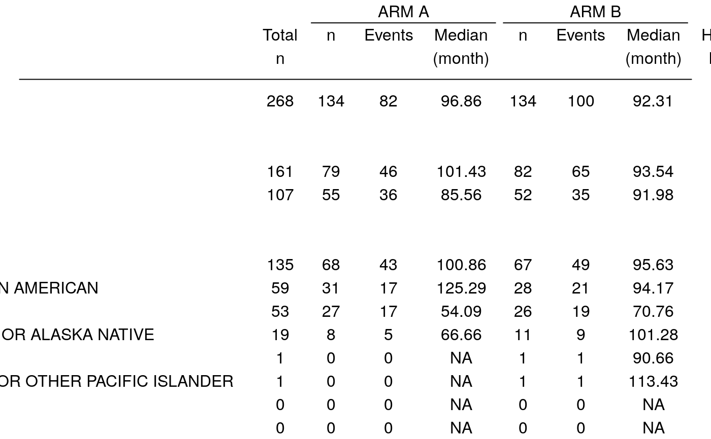

Create a Forest Plot based on a Table
g_forest.RdCreate a forest plot from any rtable object that has a
column with a single value and a column with 2 values
g_forest( tbl, col_x, col_ci, vline = NULL, forest_header = NULL, xlim = NULL, logx = FALSE, x_at = NULL, width_row_names = NULL, width_columns = NULL, width_forest = unit(1, "null"), col_symbol_size = NULL, draw = TRUE, newpage = TRUE )
Arguments
| tbl | ( |
|---|---|
| col_x | ( |
| col_ci | ( |
| vline | ( |
| forest_header | ( |
| xlim | ( |
| logx | ( |
| x_at | ( |
| width_row_names | ( |
| width_columns | ( |
| width_forest | ( |
| col_symbol_size | ( |
| draw | ( |
| newpage | ( |
See also
Examples
library(random.cdisc.data) library(dplyr) ADSL <- radsl(cached = TRUE) ADTTE <- radtte(ADSL, cached = TRUE) ADTTE_f <- ADTTE %>% dplyr::filter(PARAMCD == "OS" & ARMCD %in% c("ARM B", "ARM A")) %>% mutate(ARMCD = droplevels(ARMCD)) var_labels(ADTTE_f) <- var_labels(ADTTE) tbl <- t_forest_tte( tte = ADTTE_f$AVAL, is_event = ADTTE_f$CNSR == 0, col_by = ADTTE_f$ARMCD, row_by_list = ADTTE_f[, c("SEX", "RACE")], # note factors required ties = "exact", dense_header = TRUE ) # note plot requires a certain width p <- g_forest( tbl = tbl, col_x = 8, col_ci = 9, vline = 1, forest_header = c("Treatement\nBetter", "Comparison\nBetter"), xlim = c(.1, 10), logx = TRUE, x_at = c(.1, 1, 10), col_symbol_size = 1, #draw symbol proportional to column 1 values draw = FALSE )#>grid.newpage() grid.draw(p)# For response table ADSL <- radsl(cached = TRUE) ADRS <- radrs(ADSL, cached = TRUE) ADRS_f <- ADRS %>% dplyr::filter(PARAMCD == "OVRINV" & ARMCD %in% c("ARM A","ARM B")) %>% mutate(ARMCD = droplevels(ARMCD)) var_labels(ADRS_f) <- var_labels(ADRS) if (FALSE) { tbl <- t_forest_rsp( rsp = ADRS_f$AVALC %in% c("CR", "PR"), col_by = factor(ADRS_f$ARM), row_by_list = ADRS_f[, c("SEX", "RACE", "STRATA2", "BMRKR2")], strata_data = ADRS_f[ , c("STRATA1")] ) tbl p <- g_forest( tbl = tbl, col_x = 8, col_ci = 9, vline = 1, forest_header = c("Comparison\nBetter", "Treatement\nBetter"), xlim = c(.1, 10), logx = TRUE, x_at = c(.1, 1, 10), col_symbol_size = NULL, draw = FALSE ) p <- decorate_grob(p, titles = "forest plot", footnotes = footnotes(p)) grid.newpage() grid.draw(p) tbl2 <- t_forest_rsp( rsp = ADRS_f$AVALC %in% c("CR", "PR"), col_by = factor(ADRS_f$ARM), row_by_list = ADRS_f[, c("BMRKR2")], strata_data = ADRS_f[ , "STRATA1"] ) tbl2 # stratified analysis noted in footnote p <- g_forest( tbl = tbl2, col_x = 8, col_ci = 9, vline = 1, forest_header = c("Comparison\nBetter", "Treatement\nBetter"), xlim = c(.1, 10), logx = TRUE, x_at = c(.1, 1, 10), col_symbol_size = 1, draw = FALSE ) p <- decorate_grob(p, titles = "forest plot", footnotes = footnotes(p)) grid.newpage() grid.draw(p) } # Works with any rtable tbl <- rtable( header = c("E", "CI", "N"), rrow("", 1, c(.8, 1.2), 200), rrow("", 1.2, c(1.1, 1.4), 50) ) g_forest( tbl = tbl, col_x = 1, col_ci = 2, col_symbol_size = 3 )tbl <- rtable( header = rheader( rrow("", rcell("A", colspan = 2)), rrow("", "c1", "c2") ), rrow("row 1", 1, c(.8, 1.2)), rrow("row 2", 1.2, c(1.1, 1.4)) ) g_forest( tbl = tbl, col_x = 1, col_ci = 2, vline = 1, forest_header = c("Hello", "World") )